Отчёт по лабораторной работе 1
Пункт 1. Подключение к серверу с помощью Putty.
Подключение к серверу kubsu-dev.ru по порту 58528 будет происходить через специальную программу PuTTY с типом соединения SSH. Я ввёл домен сайта и порт подключения, после чего нажал кнопку Open.
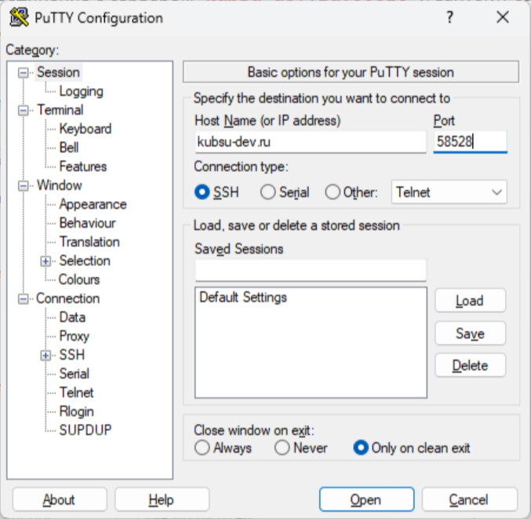
После нажатия на кнопку Open открылось консольное окно PuTTY, в котором я успешно прошёл авторизацию. Данное окно предназначено для взаимодействия непосредственно с сервером. Таким образом я настроил подключение к учебному серверу.
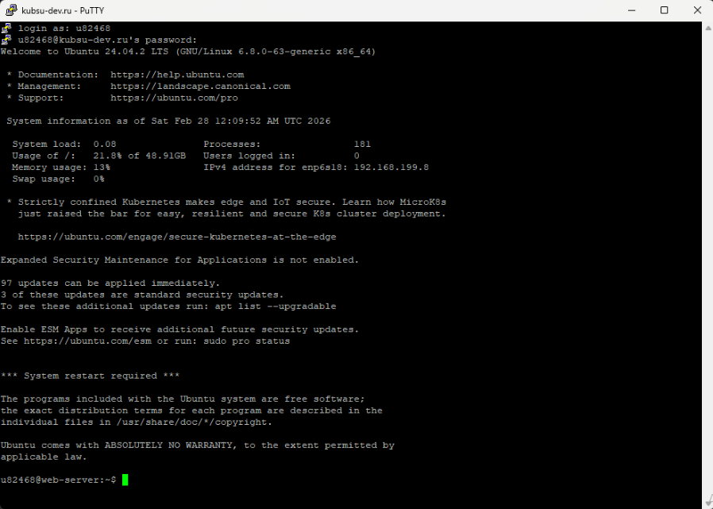
Пункт 2. Использование команды ping.
В консоли я воспользовался утилитой ping:
ping -c 2 kubsu.ru
С помощью записи "-c 2" я ограничил число пакетов для проверки (до двух).
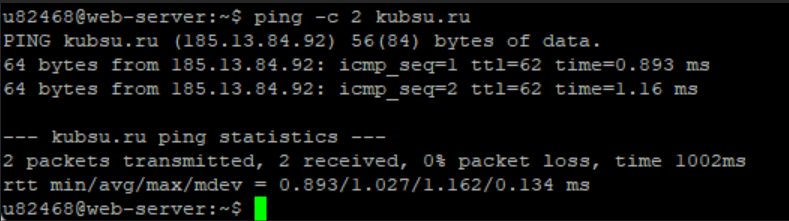
После ввода команды на экране появился IP-адрес сервера, а именно 185.13.84.92. Также судя по выводу, можно узнать, что оба пакета дошли успешно, отображено время передачи каждого пакета, и внизу имеется статистическая сводка о скорости и качестве подключения. Общее время передачи пакетов 1002 мс.
Пункт 3. Использование команды nslookup.
Я ввёл команду nslookup для домена kubsu.ru.
В данном случае я сделал запрос A-записи домена kubsu.ru:
nslookup kubsu.ru
Результат: 185.13.84.92 (IP адрес)
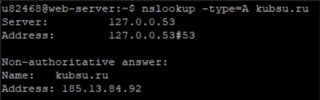
Здесь я сделал запрос MX-записи домена kubsu.ru:
nslookup -type=mx kubsu.ru
В результате у нас есть три строки, каждая из которых содержит информацию о почтовых серверах:
- kubsu.ru mail exchanger = 50 mx.kubsu.ru
- kubsu.ru mail exchanger = 20 mx.kubannet.ru
- kubsu.ru mail exchanger = 10 mx2.kubannet.ru
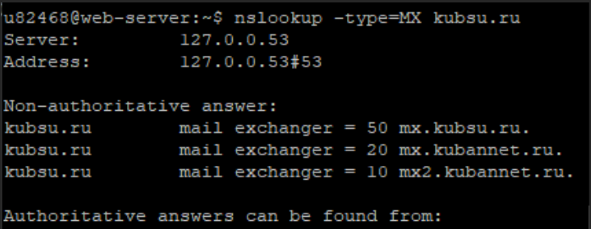
Пункт 4. Использование команды whois.
kubsu.ru:
whois kubsu.ru
В результате использования whois я получил много информации по домену:
- Дата создания: 1998-03-28
- Время создания: 12:18:30
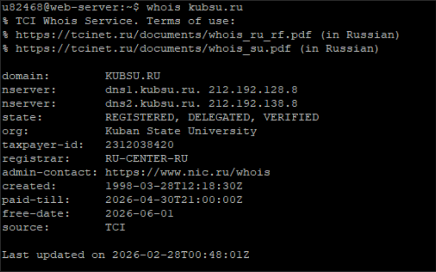
kubsu-dev.ru:
whois kubsu-dev.ru
- Дата создания: 2020-02-12
- Время создания: 15:55:06
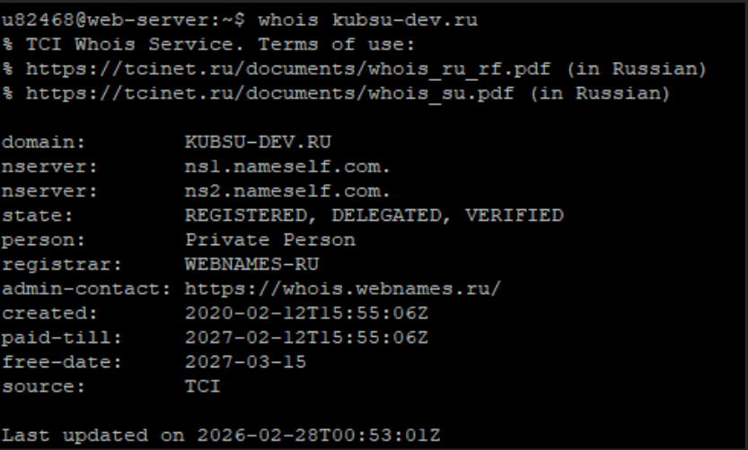
Пункт 5. Создание локального репозитория.
Я подготовил специальную папку со скриншотами и файлом index.html и создал репозиторий на GitHub для размещения туда своей web-страницы.
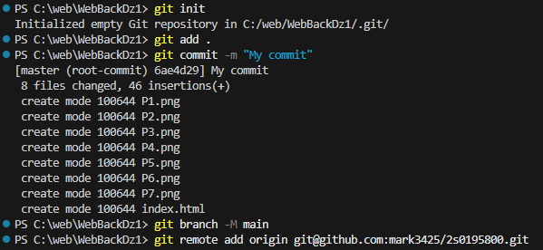
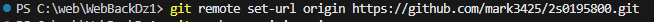
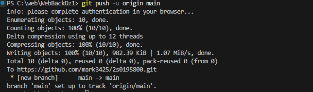
Таким образом у меня получился репозиторий с моей страницей на GitHub.
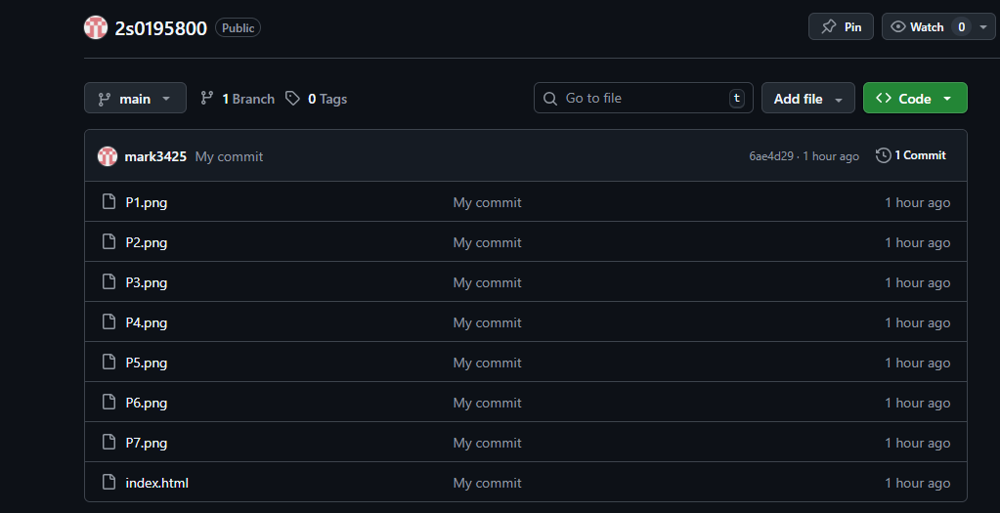
Теперь зальём веб страницу на учебный сервер. Заливать буду в папку www/2s0195800. Для этого я буду использовать git clone, который реализую через ssh протокол
Для этого необходимо сгенерировать ключи шифрования. Открытый и закрытый. генерирую их на сервере, потом извлекаю оттуда публичный и заношу его в git.
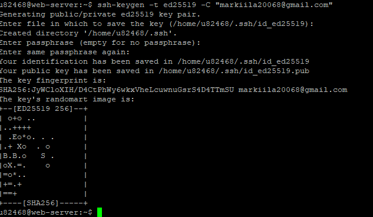
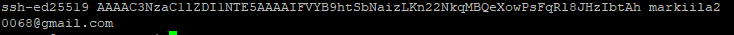
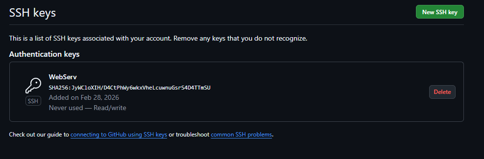
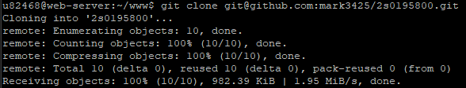
Всё получилось, убедиться в этом можно перейдя на страницу по адресу http://u82468.kubsu-dev.ru/2s0195800/ .